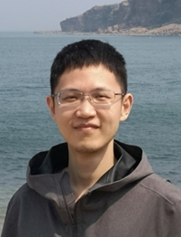
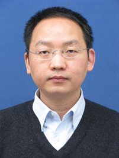

专题论坛
专题论坛1：三维视觉与无人系统前沿进展与应用
| 论坛讲者（按姓氏拼音排序） | |||
|---|---|---|---|
 |
|||
| 林迪(论坛主席) | 郭裕兰 | 卢策吾 | 朱鹏飞 |
| 天津大学 | 国防科技大学 | 上海交通大学 | 天津大学 |
论坛简介
构建能够理解三维场景中各种信息的无人系统，能极大方便人们日常生活，提高社会生产效率。已经被广泛应用的无人车、无人机以及其他机器人设备，往往借助三维视觉技术对三维场景数据进行采集、处理、理解，获取信息汇总以进行行为决策。 在这个过程，如何将三维视觉技术和无人系统紧密结合起来，成为一个富有挑战性和高价值的科学问题。 本论坛聚焦三维视觉和无人系统前沿进展与应用，重点分享三维视觉基础技术进展、三维视觉与无人系统相结合的应用进展、无人系统行为决策技术进展等方面， 并探讨相关技术交叉融合和产业应用趋势。
- 论坛主席：林迪
- 个人简介：林迪，天津大学副教授。2016年于香港中文大学获博士学位，2020年入选天津大学英才副教授系列。主要研究方向是二维、三维场景语义理解，目前于TPAMI/CVPR/ICCV/ECCV/NeurIPS/ICML/Siggraph等计算机视觉、图形学和机器学习顶级会议和期刊上发表论文30余篇，相关研究成果获互联网+天津市金奖、COCO全景分割竞赛季军。目前担任中国图象图形学学会智能图形专委会委员，图形学国际会议CGI程序委员会委员。构建了首个基于笔触的弱监督语义分割数据集PASCAL-Scribble以及用于多属性复杂天气情况识别数据集MWD。
- 个人邮箱： di.lin@tju.edu.cn
- 论坛讲者：郭裕兰
- 报告题目：大规模点云理解与压缩
- 报告摘要：激光雷达和深度相机等传感器的快速发展，使得三维点云数据在自动驾驶、机器人、AR/VR等领域得到了广泛的关注。面向点云数据的深度学习研究，也成为了近年来计算机视觉领域的研究热点。然而，三维点云存在数据量大、标注困难、不同传感器采集的数据差异大等特点，给点云深度学习算法的设计和应用落地带来诸多挑战。在本报告中，将分享研究团队在点云特征学习和点云压缩方面的新进展。
- 讲者简介：郭裕兰，国防科技大学副教授。主要研究方向为点云特征学习、三维场景感知与理解。目前已在IEEE TPAMI、IJCV和CVPR等国际期刊和会议上发表学术论文100余篇，论文被引用6000余次。目前担任中国图象图形学学会三维视觉专委会秘书长，IEEE Transactions on Image Processing和Computers & Graphics等五个期刊编委，曾担任CVPR 2021、ICCV 2021和ACM Multimedia 2021等国际会议领域主席。曾入选2020年度Elsevier中国高被引学者和中国首届博士后创新人才支持计划，获得ACM China SIGAI Rising Star Award，中国人工智能学会吴文俊人工智能优秀青年奖，中国人工智能学会优秀博士学位论文。
- 个人邮箱： yulan.guo@nudt.edu.cn
- 论坛讲者：卢策吾
- 报告题目：行为认知与具身智能
- 报告摘要：行为理解是人工智能领域的重要问题，其复杂性远远大于物体检测，本讲座讲讨论如何定量分析行为理解的难度，揭示无法用深度学习根本解决的原因。并推出一套全新的端对端可微分的感知-推理方案，很大程度上推进了行为理解，并在此基础上构建大规模行为理解知识引擎（HAKE），涉及千万基本知识样本，为Neural-Symbolic（网络-符号）提供实验室平台。为了进一步证明，行为理解在生物神经层面的存在性，构建一套全新的视觉感知与脑信号链接系统，揭示了行为理解在机器认知与生物认知的稳定相关性，同时成果预测了“社会阶层行为”的神经回路。从另一个角度，我们希望研究机器人行为理解与任务理解，涉及到“具身智能”（Embodied AI），因此该讲座将简介“具身智能”的历史发展，介绍讲者提出的robotflow框架面向机器人本体的通用框架，同时介绍在机器人抓取方面的最新工作GraspNet-首个达到人类抓取能力通用抓取算法。最后总结行为理解与具生智能（第一视角行为理解）的内在关系与发展趋势。
- 讲者简介：卢策吾，上海交通大学教授，博士生导师，2016年获国家海外引进高层青年人才，2018年被《麻省理工科技评论》评为35位35岁以下中国科技精英（MIT TR35），2019年获求是杰出青年学者，2020年获上海市科技进步特等奖，上海交通大学校长奖。以通讯作者或第一作者在《Nature》，《Nature Machine Intelligence》，TPAMI，CVPR等高水平期刊和会议发表（含接收）论文100多篇；担任《Science》，《Nature Machine Intelligence》审稿人，CVPR 2020，ICCV 2021，IROS 2021领域主席。研究兴趣包括，人类行为理解，机器人学习，代表作包括人体姿态估计Alphapose（GitHub Star 5000+），HAKE（人体行为引擎），GraspNet（机器人通用抓取系统），RobotFlow（机器人学习开源系统）。
- 个人邮箱： lucewu@sjtu.edu.cn
- 论坛讲者：朱鹏飞
- 报告题目：VisDrone--无人机视觉开放数据平台
- 报告摘要：智能无人系统依赖于多传感器对周围环境进行鲁棒的环境感知。团队构建了VisDrone大规模无人机视觉数据平台，包括可见光数据、双光数据以及多机协同数据等，覆盖目标检测、目标跟踪、群体分析和协同感知等任务。基于VisDrone数据平台，团队提出了多任务时空近邻感知网络、图正则光流网络、多机协同感知网络、双光融合网络等模型，开发了人机协同数据平台、河道智能巡检系统、智能交通巡检边缘计算盒子等产品，并成功应用在自动驾驶、智慧城市等领域。
- 讲者简介：朱鹏飞，天津大学副教授，博士生导师，2015年于香港理工大学获得博士学位。主要研究方向是高维异构数据表示与识别，已发表CCF A类和IEEE汇刊40余篇，谷歌学术引用4000余次。获IEEE ICME2021最佳论文奖、CVPR2020最有影响力15篇论文、吴文俊人工智能优秀青年奖、黑龙江省自然科学一等奖、中国智能交通学会科技进步二等奖等奖励。参与制定人工智能领域团体标准13项。入选2019年度天津市青年人才托举工程以及2020年度天津市创新人才推进计划青年科技优秀人才。构建大规模无人机视觉数据平台VisDrone，担任ECCV2018、ICCV2019、ECCV2020、ICCV2021无人机视觉研讨会和竞赛负责人。
- 个人邮箱： zhupengfei@tju.edu.cn
专题论坛2：如何构建真实感的数字世界：渲染技术的最新进展
| 论坛讲者（按姓氏拼音排序） | |||
|---|---|---|---|
| 王锐(论坛主席) | 过洁 | 霍宇驰 | 王贝贝 |
| 浙江大学 | 南京大学 | 浙江大学 | 南京理工大学 |
论坛简介
虚实融合、数字孪生等领域对真实感渲染的要求与日俱增，渲染真实感
的影响因素涵盖了高精度材质获取，具有真实感的材质模型，高效渲染方法以及高质量的降噪方法。在本论坛中，
我们邀请到学术界和产业界的青年教师来分享他们在这些领域取得的最新进展，并且就其中的相关问题展开讨论。
- 论坛主席：王锐
- 个人简介：王锐，浙江大学教授，博士生导师，长期从事绘制研究，主要围绕虚拟现实与三维游戏中的图形绘制理论、算法与框架开展工作，在复杂光场高效采样、实时绘制算法、绘制架构的自动优化等方面做出了重要突破，取得了国际领先的研究创新成果，发表学术论文50余篇论文（TOP期刊论文十余篇）。承担多项国家省部项目，已获授权十余项专利，相关研究成果已成功应用于华为、西门子、网易游戏、中南卡通等公司。2011年度获教育部高等学校科学研究优秀成果奖科学技术进步奖一等奖（排名第3）。
- 个人邮箱： ruiwang@zju.edu.cn
- 论坛讲者：过洁
- 报告题目：三维数字内容：智能化创造和高性能渲染
- 报告摘要：随着虚拟现实、元宇宙等新型数字经济产业的兴起和发展，三维数字内容创造步入了快车道。尤其是在元宇宙领域，允许每个用户进行三维数字内容的生产和编辑。然而，现阶段的三维数字内容创造严重依赖昂贵的软硬件设施和专业的操作人员，对普通用户门槛很高；现有的渲染平台也很难支持复杂三维场景的实时全局光照计算。本次报告将分享我们在三维数字内容智能化创造，尤其是面向普通大众的智能化材质建模和光照估计，以及基于智能帧外插的下一代高性能渲染框架等方向的研究成果。这些研究成果极大的降低了三维数字内容创作的门槛和成本，也提高了大规模三维场景渲染的性能，为未来虚拟现实、元宇宙等新型数字经济产业的持续发展提供技术保障。
- 讲者简介：过洁，南京大学计算机科学与技术系副研究员，目前主要研究方向为真实感绘制、实时绘制、复杂材质分析建模以及虚拟现实技术等。曾主持国家自然科学基金两项、江苏省自然科学基金一项、“十三五”装发预研项目一项、博士后基金三项、企业合作项目多项。曾获得过江苏省计算机学会青年科技奖、江苏省工程师学会优秀青年工程师奖和陆增镛CAD&CG高科技奖等科研奖励。迄今为止，发表高水平学术论文60余篇，包括计算机图形学领域顶级会议/期刊ACM SIGGRAPH/SIGGRAPH ASIA、IEEE TVCG，视觉领域顶级会议CVPR、ICCV、ECCV 等。
- 个人邮箱： guojie@nju.edu.cn
- 论坛讲者：霍宇驰
- 报告题目：
- 报告摘要：围绕光能传播过程，由三维空间到二维图像的前向计算服务于真实感呈现，与之相反的逆向计算服务于三维感知，两者构成信息科学中连接现实物理世界和数字虚拟世界的两个基本任务。两个任务逻辑上互逆共生，但在实现技术手段上却迥然不同：主流感知任务依赖于神经计算，而主流呈现任务依赖于物理计算。这一割裂不仅破坏了理论框架的平衡与和谐，还带来了研发成本和计算成本的上升。如何在算法和计算底层实现物理与神经计算的融合，是我们面临的新挑战和新机遇。
- 讲者简介：霍宇驰，浙江大学百人计划研究员，博士生导师，之江实验室研究专家，浙江大学启真优秀青年学者。从事基于物理的光能计算及仿真的相关研究工作，探究光在三维真实世界中与几何、材质、光照等物理因素产生交互的物理传播与计算，研究计算机图形学、计算机视觉、计算光学和人工智能的交叉问题，包括真实感绘制、神经绘制、三维重建、图像修复、图像检索、类脑光学计算等。在SIGGRAPH，TOG，TVCG，CVPR，NIPS等顶会顶刊上发文十余篇，包括TOG封面等成果。
- 个人邮箱： eehyc0@zju.edu.cn
- 论坛讲者：王贝贝
- 报告题目：真实感材质模型
- 报告摘要：现实世界中的材质是多种多样的：平滑的材质（比如金属、塑料），带微小结构的材质（比如划痕、亮片），以及一些微小纤维构成的材质（比如布料、木头）。那么在渲染中，如何来表示大千世界中的这些材质呢？围绕着材质表达这个主题，本次报告中将介绍本团队提出的几种不同的材质表达模型，分别解决了Microfacet模型中的多次散射问题、Microstructure模型的多尺度渲染问题以及提出了全新“SpongeCake” Microflake模型。
- 讲者简介：王贝贝，南京理工大学，副教授，硕士生导师，中国计算机学会CAD&CG专委会委员。主要研究方向是计算机图形学渲染方向，包括了全局光照算法、参与性介质光线传递和复杂材质模型等。王贝贝分别于2009年、2014年在山东大学获得学士、博士学位，期间在巴黎高科进行两年联合培养。2015年在英国游戏公司Studio Gobo参与Disney游戏Infinity 3的研发。2015年底到2017年初，在INRIA（法国信息与自动化研究所）从事博士后研究。之后加入到南京理工大学。共发表高水平论文30余篇，其中以第一作者/通讯作者在ACM TOG, IEEE TVCG, CGF上发表论文二十余篇。EGSR, HPG程序委员会委员。 ACM TOG, Siggraph Asia, EG 等期刊会议审稿人。
- 个人邮箱： beibei.wang@njust.edu.cn
专题论坛3：实时物理仿真与人工智能
| 论坛讲者（按姓氏拼音排序） | |||||
|---|---|---|---|---|---|
|  |  | ||||
| 何小伟(论坛主席) | 刘天添 | 任博 | 唐敏 | 许威威 | 朱飞 |
| 中科院软件所 | 太极图形 | 南开大学 | 浙江大学 | 浙江大学 | 北京大学 |
论坛简介
以深度学习为代表的的新一轮人工智能经历近十几年的发展，其在方方面面都已取得了引人瞩目的成绩。然而，朱松纯教授在《浅谈人工智能：现状、任务、架构与统一》一文中提到“缺乏物理的常识和社会的常识”已经成为制约现有人工智能发展的最大障碍。本论坛从制约实时物理仿真和新一代人工智能所需要解决的痛点问题入手，探讨如何有效结合物理仿真与人工智能并发挥各自的优势，从而使仿真技术在包括智能仿真、工业软件、智慧医疗在内的领域发挥更为广泛的作用。
- 论坛主席：何小伟
- 个人简介：何小伟，男，中国科学院软件研究所副研究员，硕导。主要研究方向包括计算机图形学、物理仿真、数值计算方法和基于GPU并行计算等。近年来在ACM TOG、IEEE TVCG、MICCAI等国际高水平期刊和会议累计发表论文20余篇。作为主要技术负责人参与研制基于GPU/CPU混合架构的通用物理仿真框架PhysIKA，并进一步主持构建面向实时智能与物理仿真实时物理引擎peridyno（www.peridyno.com）。以项目/课题负责人承担国家自然科学基金项目2项、国家重点研发项目1项，同时参与多个国家级、省部级项目。2019年入选中国科学院青年创新促进会会员，2021年入选中科院软件所杰出青年专项支持，兼任CCF智能图形专委会委员。
- 个人邮箱： xiaowei@iscas.ac.cn
- 论坛讲者：刘天添
- 报告题目：可微物理仿真技术在高自由度运动技能学习上的应用染
- 报告摘要：可微物理仿真为基于梯度的神经网络运动控制器打开了一扇新的大门。然而， 简单的基于梯度的控制器往往只能完成单一目标的训练。这次报告中，我们将展示一个可以胜任多种运动目标的单一网络训练框架。我们在不同的高自由度物理系统（如弹簧质点系统和物质点法系统）中证实了我们的训练框架的可靠性和高效性。实验证明我们的基于梯度的训练框架可以在单一网络中跑出比增强学习更好的结果，且训练时间显著优于增强学习。
- 讲者简介：刘天添是太极图形的资深研究科学家。他于宾夕法尼亚大学取得博士学位，在加入太极之前，还曾在微软亚洲研究院网络图形组工作。他的研究兴趣主要是高性能数值计算，实时物理仿真和几何处理，发表论文被ACM TOG收录9篇。
- 个人邮箱： tiantian@taichi.graphics
- 论坛讲者：任博
- 报告题目：欠驱动流体系统的增强学习控制技术
- 报告摘要：我们针对欠驱动的流固耦合系统，提出了一类使用了增强学习手段，用极低的控制自由度完成对场景中无法自我驱动的物体的控制操作的算法。该方法使用卷积神经网络提取流场的特征向量以降低输入信息的维度和训练复杂度，并将流场信息与场景中固体、边界等信息输入网络，输出一个可行的达成目标任务的优化控制行为。这一研究可以为游戏AI、机械控制等提供全新的解决方案。报告还将探讨如何进一步地让策略生成网络能够处理多任务，且更加高效学习并稳定地在不同模拟器间完成迁移。
- 讲者简介：任博于2015年于清华大学计算机科学与技术系获得工学博士学位。2015年7月至今于南开大学计算机系任教。主要研究领域为计算机图形学，计算机视觉，人工智能。近期研究方向包括基于机器学习/基于物理的流体模拟，三维场景重建，真实感渲染等。任教以来指导学生在国际顶级会议期刊（中科院一区，CCF A类）发表文章多篇。承担国家自然科学基金项目、参与国家重点研发计划等多个国家级项目，参与开源通用物理仿真引擎PhysIKA的研发。
- 个人邮箱： rb@nankai.edu.cn
- 论坛讲者：唐敏
- 报告题目：基于学习方法的三维服装实时变形预测
- 报告摘要：我们给出了一种基于三维网格的学习方法来对三维服装进行实时变形预测。该方法具有较好的通用性，可以处理任意拓扑网格表示的服装和物体。我们使用了图卷积网络将服装和物体变换到隐空间，从而降低了原模型空间中的非线性性。我们的网络可以基于服装的初始模板和物体的目标状态，实时预测出三维服装网格的变形。该方法可以处理多达100K三角形组成的中型场景，物体可以由SMPL人体模型、非SMPL人体、或刚体组成。在实践中，我们的方法也展现出了较好的帧间连续性，并且可在一块NVIDIA GeForce RTX 3090 GPU上以30-45fps的效率实时生成逼真的服装变形。我们也将该方法与前人的基于学习和基于物理的仿真算法进行了对比，并展示了其优越性。
- 讲者简介：唐敏，男，浙江大学计算机科学与技术学院教授，博导，中国计算机学会高级会员，ACM/IEEE会员。 在工作期间主持国家自然科学基金项目4项、国家支撑计划项目1项、博士点基金项目1项、浙江省自然科学基金面上项目2项、重点项目1项， 参与了多项国家级、省部级科研项目，并获得教育部科学进步二等奖（1997），国家科学进步三等奖（1999），浙江省技术发明一等奖（2021），中国电子学会科技进步奖三等奖（2022）。主要研究方向：物理仿真、基于图形处理器的计算加速、计算机辅助设计等，已在国内外期刊会议发表论文80余篇，SCI/EI收录50余篇（ACM TOG论文7篇）。
- 个人邮箱： tang_m@zju.edu.cn
- 论坛讲者：许威威
- 报告题目：面向物理仿真的自动量化技术
- 报告摘要：高分辨率的物理仿真可以带来很好的视觉效果，但其内存复杂度高，无法在桌面或移动平台上计算。本报告将介绍如何通过在编译器层面实现对量化数据类型，减少对仿真流水线量化编程开销，以极小的编程代价进行位级别的空间压缩，有效减少物理仿真算法内存空间和带宽的消耗，提高物理仿真的规模和分辨率。基于量化编译器，可实现在单张 NVIDIA RTX 3090 GPU上超过2.35亿粒子的物质点法仿真和单张NVIDIA TESLA V100 GPU上超过4亿个欧拉网格的烟雾仿真。在此基础之上，我们进一步提出了基于不确定性传播的量化方案求解方法，可以对物理仿真程序的变量进行自动量化。并将单张RTX 3090 GPU上的物质点法仿真规模进一步提高到了4亿粒子。通过自动量化方法与用户手工设计的量化方案进行对比，自动量化方案在消耗更少的内存的同时还具有更高的计算精度。
- 讲者简介：现任浙江大学CAD&CG国家重点实验室长聘教授，教育部长江学者。曾任日本立命馆大学博士后，微软亚洲研究院网络图形组研究员, 杭州师范大学浙江省钱江学者特聘教授。主要研究方向为计算机图形学、三维重建、深度学习、物理仿真及3D打印。在国内外高水平学术会议和期刊发表论文80余篇，其中ACM Transactions on Graphics, IEEE TVCG, 及IEEE CVPR等CCF-A类论文20余篇。获中国和美国授权专利15项。所开发的三维注册和重建技术在高精度扫描仪及人体三维重建系统中得到应用。2014年受国家自然科学基金优秀青年基金资助，主持国家自然科学基金重点项目一项，获浙江省自然科学二等奖一项。
- 个人邮箱： xww@cad.zju.edu.cn
- 论坛讲者：朱飞
- 报告题目：基于GPU的四面体网格实时生成技术在CAE云仿真平台中的工程实践
- 报告摘要：朱飞，男，北京大学计算机学院博士后，北京云境智仿信息技术有限公司CEO。主要研究方向为计算机图形学、物理仿真、基于GPU的并行计算等。作为核心技术人员参与国家重点研发计划、973、863等科研项目，在国内外期刊会议发表论文多篇。作为技术负责人长期从事图形学及并行计算相关技术的工程化落地，曾任创业公司资深算法工程师，研制面向服装数字化的物理仿真引擎及渲染引擎，任上市公司算法架构师，研究实时物理仿真技术在移动端的产品应用以及人工智能技术在视频基础画质提升等方面的应用等。
- 讲者简介：基于GPU的并行求解技术能大幅缩短仿真计算过程的耗时，提高生产效率。以有限元为代表的数值求解方法需要对几何模型做网格化处理，随着求解过程的性能提升，网格生成过程的性能成为瓶颈，网格化的耗时通常占全流程的1/3～1/2，甚至更多。现有的仿真软件大都采用“串行网格生成 + 并行求解”的计算模式，无法做到全流程并行。报告介绍我们在实现基于GPU并行的四面体网格生成技术过程中积累的工程实践，包括初始网格并行生成算法、网格质量并行优化算法、高性能GPU程序的通用准则等，并展示并行的网格生成技术在自研CAE云仿真平台中的应用实例。
- 个人邮箱： feizhu@pku.edu.cn
专题论坛4：CAD/CAE/CAM工业软件
| 论坛讲者（按姓氏拼音排序） | |||
|---|---|---|---|
| 陈中贵(论坛主席) | 申立勇 | 王琥 | 徐岗 |
| 厦门大学 | 中国科学院大学 数学科学学院/密码学院 |
湖南大学 | 杭州电子科技大学计算机学院 |
论坛简介
CAD/CAE/CAM工业软件是制造业的基石，是驱动智能制造发展的关键技术之一。随着我国工业现代化程度不断提高，实现国产化以及自主可控的工业软件越来越引起产学研各界的重视。本专题论坛邀请了来自学术界和的工业界多位专家，与大家分享目前学术界的理论成果和应用实践以及工业界的发展现状、人才需求和主要挑战等，旨在加强学术界与工业界交流合作，促进CAD/CAE/CAM国产工业软件在人才培养、理论研究和行业应用等方面的协同发展。
- 论坛主席：陈中贵
- 个人简介：陈中贵，厦门大学信息学院教授、博士生导师，中国计算机学会高级会员、中国图象图形学学会高级会员。2009年6月在浙江大学获博士学位；2009年-2010年在香港大学计算机系从事博士后研究；2017年-2018年在美国卡耐基梅陇大学访学。主要从事三维几何建模与处理方面研究，已发表学术论文五十余篇，其中多篇论文发表在图形学领域重要期刊如ACM TOG、IEEE TVCG、CAD、CGF、CAGD等；授权国家发明专利6项，主持国家自然科学基金项目3项、省自然科学基金面上项目2项，作为主要成员参与海峡基金联合重点项目1项、国基面上项目2项、海外及港澳学者合作基金1项。担任国际期刊The Visual Computer编委，以及三维几何处理领域主要国际学术会议程序委员会委员，如SPM、GMP、SMI、CAD/Graphics等。
个人主页：http://graphics.xmu.edu.cn/~zgchen/ - 个人邮箱： chenzhonggui@xmu.edu.cn
- 论坛讲者：申立勇
- 报告题目：数字化设计、分析与制造一体化中的数学建模方法
- 报告摘要：几何数字化设计是计算机图形学，计算机三维视觉，数字化制造，AR等领域的核心问题，包含计算几何，几何设计与处理，图形图像处理，路径规划与运动控制，几何机器学习等，其中一个共性关键技术就是数理模型建立、分析与求解。目前智能制造作为国家战略要地，其中关键数学理论与方法相关研究已经列入十四五规划，同时也给出多个项目支持。这里将简要给出CAD-CAM-CNC数字化智能加工一体化流程中一些数学问题。
- 讲者简介：申立勇为中国科学院大学数学科学学院教授，密码学院副院长，中科院大数据与知识发现重点实验室成员，国家数学与交叉中心数学与先进制造交叉研究部合作成员，辽宁省智能化数控工程技术研究中心特聘专家。研究兴趣包括计算几何，计算机辅助设计，数字化设计与数控技术，数据处理等。在国内外专业核心期刊TOG、CAD、CAGD、JSSC及国际学术会议上发表学术论文60余篇；先后主持国家重点研发计划课题，国防专项课题，北京市重点专项，国家自然科学基金青年项目和面上项目。
- 个人邮箱： lyshen@ucas.ac.cn
- 论坛讲者：王琥
- 报告题目：面向行业的自主化智能设计平台开发
- 报告摘要：多学科智能优化是实现现代多学科设计领域设计的关键问题，也是计算力学跨学科的研究热点。大量的科研人员和工程师基于国外成熟商用或开源软件完成复杂产品设计或研究工作，如HyperStudy、Isight、ModelFrontier、Optimus等。目前，这些商业软件平台经过多年的版本迭代，形成了各自鲜明的特色和操作特点，但这类软件设计平台功能大同小异，主要涵盖实验设计、敏度分析、近似建模、优化、以及随机性分析等模块，并涉及到各类多学科软件的集成调用、数据交互、高性能计算等。尽管主流软件具备功能体系完善，但由于强调通用性，针对不同的行业，很多功能冗余，软件利用率低，且大幅度增加了软件的学习成本。为了打破国外商业软件在设计领域的垄断，针对目前商业软件的短板，提升我国自主产品设计的创新和设计能力，迫切需要以行业应用为切入点、自主开发面向行业的多学科智能优化设计平台，使其具备大规模计算能力，调度各学科算法，以较低的使用和学习成本赋能行业中的特定工程实际问题。
- 讲者简介：王琥，湖南大学教授，博士生导师，湖南迈曦软件有限责任公司联合创始人，教育部新世纪人才，岳麓学者。主要从事智能结构优化方法、快速计算方法，参数反求理论以及高性能计算等相关研究及软件开发工作。获教育部科技进步一等奖，机械工业部科技进步二等奖。主持国家重点研发计划课题，863重点项目课题，国家自然科学基金，湖南省自然科学基金重点项目多项，出版专著1部，发表SCI论文100余篇，引用2000余次，获Emarld出版社杰出论文奖，授权发明专利8项，软件著作权十余项。
- 个人邮箱： wanghu@hnu.edu.cn
- 论坛讲者：徐岗
- 报告题目：iGame v1.0:基于等几何分析的建模仿真优化一体化软件平台
- 报告摘要：基于等几何分析（iso-geometric analysis）思想，可实现几何建模、物理仿真、结构优化的真正无缝融合。本报告将汇报课题组基于等几何分析的三维产品数字化建模、仿真与优化一体化软件平台iGame的研发进展，介绍iGame v1.0 版本的理论基础、功能特性、组织架构及特色应用，并分享将来的开发计划。
- 讲者简介：徐岗，杭州电子科技大学计算机学院副院长，教授，博士生导师，CCF杰出会员。研究兴趣包括几何计算、等几何仿真分析、网格生成、图形图像智能处理等。曾获得全国首届“几何设计与计算”青年学者奖，陆增镛CAD&CG高科技奖二等奖，入选浙江省杰青（2016），浙江省“万人计划”（2018）及浙江省首批高校创新领军人才（2020）。以负责人身份主持在研或完成国家自然科学基金项目7项（包括重点类项目2项，面上项目3项），主持国家重点研发计划课题、中物院挑战计划专题项目、国家数值风洞重大工程课题，浙江省重点研发计划等重要科研项目多项，并主持研发了面向天枢人工智能平台的深度学习可视化系统。担任GDC 2022 程序委员会共同主席及GAMES执委会常务委员.
个人主页：http://mypage.hdu.edu.cn/xugang - 个人邮箱： gxu@hdu.edu.cn